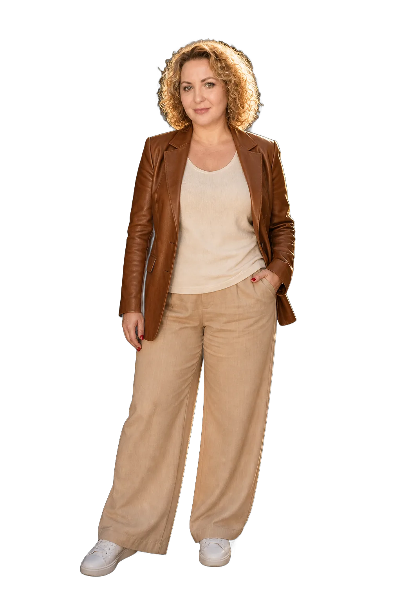

Видео нейросетями · с нуля
НейроВидеоСтудия: вы научитесь делать видео из ничего

Сценарий → кадр → герой → монтажполный цикл, не «оживление картинок»
Первый ролик — в первый вечердо теории и обзоров
Из фотографии товара, из одной идеи, из собственного лица. И продавать этим: себя или свою работу
SYNTX — все нейросети в одном окнеодна регистрация, одна оплата рублями
13 модулей, 87 уроковмодуль в неделю, 12 недель
- 13модулей
- 87уроков
- 12недель
Ближайший старт — 1 октября · 12 недель
Образовательная лицензия № Л035-01261-30/01053865